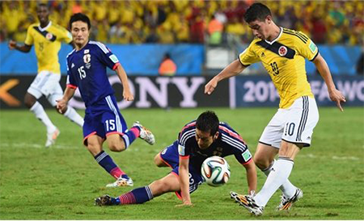

Kèo "thơm" Colombia vs Nhật Bản: Át vía châu Á
Trong quá khứ, Colombia luôn áp đảo khi đối đầu với Nhật Bản. Đã 3 lần hai đội gặp nhau, và đại diện Nam Mỹ có 2 chiến thắng, ghi 5 bàn.Trong lần gần nhất đối mặt, Colombia đã hạ gục Nhật Bản với tỷ số đậm, ở World Cup 2014.

Chuyên gia chọn kèo Ba Lan vs Senegal: Dễ hòa, cược Senegal